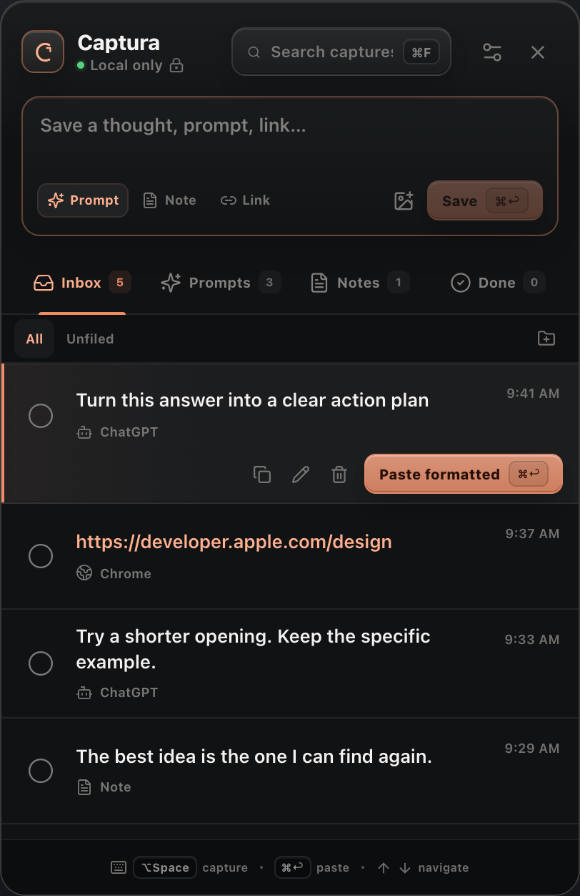
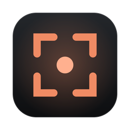

A little space for your next thought
Keep the thought.Keep your focus.
Save answers, links, and your next prompt. Paste them back when you’re ready, without losing your place.

For the way you already work.
Your next idea shouldn’t
interrupt this one.
You’re in the middle of something. An answer worth keeping. A link for later. A better question to ask next.
Give it a place to land. Then get right back to work.
One small habit. A clearer head.
Capture. Keep moving.
From “I’ll need this” to right where you need it.
Turn this answer into a clear action plan.
Ready when you are. No need to keep it in your head.
Feels at home.
Stays out of the way.
A small space in your menu bar, ready over the app you’re using. Even in full screen.
- Your keyboard. Your rules.
- Capture, search, and paste without reaching for the mouse. Change any shortcut to fit your habits.
- Your clipboard, preserved.
- Paste a capture back into your work without losing what you had copied before.
- A queue you can actually use.
- Find a note, group a few prompts, merge ideas, or copy a list. Keep what matters moving.
Your thoughts have a home.
Your Mac.
Your captures are stored locally on your Mac.
No account to create. No cloud to manage. No analytics.
A few good
questions.
The small things,
before you get started.
How is this different from a clipboard manager?
Captura is a queue for things you choose to keep. Save a useful answer, write your next prompt, or collect a link. Search, organize, paste back, and mark things done as you work.
Does Captura work with my AI apps?
Captura works with text selection and copy and paste on your Mac. Use it alongside ChatGPT, Claude, Cursor, your browser, and other apps. It doesn’t need an AI account connection or a browser extension.
Selection support depends on the source app. You can copy text first and use Captura’s clipboard fallback.
Do my captures ever leave my Mac?
Captura stores your captures in a local database. It has no account system, analytics, or capture sync. The app contacts GitHub to check for software updates; it doesn’t upload your captures.
When you choose to paste into another app, that app’s own data practices apply. Captura doesn’t change how ChatGPT, Claude, or other services handle what you send them.
Why does it need Accessibility access?
macOS requires Accessibility permission so Captura can read selected text and perform copy and paste when you ask it to. You can review or revoke this permission in System Settings → Privacy & Security → Accessibility.
What do I need to run it?
The current downloadable build is for Apple Silicon Macs running macOS 13 or later. Download the DMG from the release page and drag Captura into Applications.
The public build is development-signed and isn’t Apple-notarized. Read the first-launch instructions on the release page, and grant Accessibility permission for selection capture and paste-back.
Can I change the keyboard shortcuts?
Yes. Option + Space is the default for capture, and Command + Enter pastes back. Every shortcut can be changed in Captura’s Settings to fit how you work.

Keep the good bits.
Get back to your work.
Your next thought already has a place.
Get Captura for Mac macOS 13+ Apple Silicon